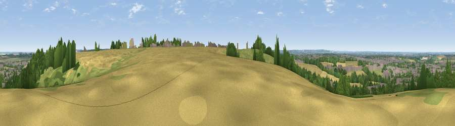

Viewpoint near Baldock
#41143 in England · top 60% of its area beats it · near Baldock · path 84 mWhere it is
The exact computed spot (TL 24925 32375). Click the marker for map links.
Public access: the nearest public right of way is about 84 m away — the final stretch may cross private land. Computed from Natural England's CRoW access layer and OpenStreetMap rights of way — not the legal definitive map. Always verify locally.
The view, rendered

A 360° render of this exact spot computed from the terrain model, tree cover and land cover — summer colours, afternoon light, calibrated against photographs of famous viewpoints. Real trees, hedges and buildings will differ in detail.
The panorama
Grey silhouette: terrain skyline in each direction (720 bearings, Earth curvature and refraction included). Dashed green: skyline with trees (+15 m) and buildings (+8 m) as obstacles. Blue strip: how far the ground is visible on each bearing.
Where the view opens
Wedge length = distance to the farthest visible ground on that bearing (vegetation-aware). Rings at 10, 25 and 50 km.
What fills the view
38% cropland · 28% woodland · 18% built-up · 17% grassland
Angular shares of the visible panorama (visual magnitude), not map area. Landscape diversity 0.58 (0–1 Shannon).
Key numbers
More beautiful places nearby
The staircase of upgrades: each row has a higher view potential than everything closer. Driving times are estimates from straight-line distance, calibrated against real road routing — check an actual route before setting out.
| Place | Direction | Drive | Score |
|---|---|---|---|
| Viewpoint near Baldock | NE · 0 km | ~1 min | 53.7 |
| Viewpoint near Great Offley | WSW · 12 km | ~22 min | 54.4 |
| Viewpoint near Royston | NE · 12 km | ~23 min | 56.6 |
| Viewpoint near Hexton | W · 13 km | ~23 min | 65.4 |
| Beacon Hill | WSW · 33 km | ~50 min | 74.1 |
| Viewpoint near Halton | WSW · 42 km | ~62 min | 74.3 |
| Coombe Hill Monument | WSW · 47 km | ~68 min | 75.5 |
| Viewpoint near Woolstone | WSW · 105 km | ~130 min | 76.7 |
51.97581, -0.18265 · source: screening · position refined by local search. Computed location — check access rights before visiting.